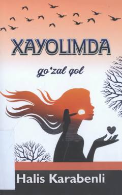

XGOshiq qahramonning sevgi iztiroblari va ichki kechinmalari haqida hissiy nasr.
Bu kitob turk yozuvchisi Halis Karabenli qalamiga mansub bo'lib, o'zbek tiliga tarjima qilingan. Asar oshiq qahramonning ichki kechinmalari, sevgi iztiroblari va xayoliy monologlari orqali ishq mavzusini chuqur his-tuyg'ular bilan tasvirlaydi. Kitob 2022-yilda Toshkentda 'Ilm-ziyo-zakovat' nashriyotida chop etilgan.